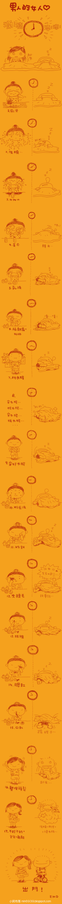

我若是不开车就会打扮的很朴素，人多示众，看的我不好意思哇。。
偶未来的一天。。。。
6：30 起床(起床之后,一定要吻一下正在熟睡的老婆的脸,但动作要轻,不得吵醒老婆) 6：35――7：00 煅炼身体(在老婆要抱的时候,可以轻易抱上七楼;在老婆受到欺负的时候,可以以一敌十) 7：00――7：30 做早餐(花样一定要多,面包、牛奶、鸡蛋，豆浆、油条、米粉、包子、馒头、稀饭，不得有重复) 7：30――7：35 打开音响,叫老婆起床(一日之计在于晨,这时候的女人这是一日之中最可爱的时候,一般都会有点撒娇,今日焦点: 叫起床时,一定要温柔,动作要轻,轻轻地搂起来) 7：35――7：45 帮老婆穿衣服(千万要小心,如果像麦当娜一样,把内衣穿在外面的话,那你就等死吧) 7：45――7：55 和老婆一起洗漱(有三要:要帮老婆挤好牙膏,要帮老婆放好洗脸水,要帮老婆梳头) 7：55――8：00 摆早餐上桌(如果老婆的妆还没有化完,不得有催促之声) 8：00――8：30 吃早餐(要能做回收站,老婆要吃的你少吃,老婆不吃的你全吃,不得浪费) 8：30――9：00 送老婆上班(有汽车的开汽车,没汽车的打计程车,绝不能让老婆挤公车) 9：00――12：00 上班(努力工作,有事做要做,事做找出事也要做) 12：00――12：10 打电话给老婆(老婆上午过得怎么样,中午要吃什么东西__这个不用教了?) 12：10――12：40 吃工作餐(记住,定要吃工作餐,得吃别的东东,算吃了别的东东,价格也不可以超过5元) 12：40――13：00 休息片刻(为了下午更好的工作,定要休息，不得在公司四处看小mm) 13：00――17：30 努力工作(不努力工作怎么养老婆?) 17：30――18：00 接老婆下班(定要准时,得让老婆久等) 18：00――19：00 陪老婆逛街(逛街是男人的必修课,每天必修.其间,老婆要买什么东西,定要大方,不得有嫌贵不买的行为,如果老婆不买什么东西,一定要买东西送给老婆) 19：00――20：00 吃饭(一定要下馆子,给老婆最喜欢吃的菜.除非你有四星级厨师的水平,那就在家里做饭吃) 20：00――20：30 散步回家(手不能停――帮老婆拿东西;嘴不能停――给老婆说笑话;眼不能停――时刻注意四周是否有危险) 20：30――23：00 陪老婆(老婆要看电视,不得换台;老婆要聊天,不得不理) 23：00 睡觉(被子要先铺好,老婆要抱好,不得比老婆先睡着)
太有意思了。尤其是穿衣服、脱衣服那一节，简直就是我早上起床后的写真，每每因为这个环节，让和我同步起床的老公在车里至少等我一刻钟，然后本来充裕的时间就变得紧巴巴的。
总之，很真实啦~~~ 现在早晨洗漱、化妆、梳头的时间我已经缩短到10分钟了！
真好玩！wind的回复好强劲啊！！
男生与女生真实的写照 :)
存档只读，评论已关闭。
Name (required)
Email (will not be published) (required)
Website
« 《Atonement》 | 南京.真人真事 »
6 Responses to “早上起床时，男人女人的差别。”
2008-10-21
我若是不开车就会打扮的很朴素，人多示众，看的我不好意思哇。。
2008-10-21
偶未来的一天。。。。
6：30 起床(起床之后,一定要吻一下正在熟睡的老婆的脸,但动作要轻,不得吵醒老婆)
6：35――7：00 煅炼身体(在老婆要抱的时候,可以轻易抱上七楼;在老婆受到欺负的时候,可以以一敌十)
7：00――7：30 做早餐(花样一定要多,面包、牛奶、鸡蛋，豆浆、油条、米粉、包子、馒头、稀饭，不得有重复)
7：30――7：35 打开音响,叫老婆起床(一日之计在于晨,这时候的女人这是一日之中最可爱的时候,一般都会有点撒娇,今日焦点: 叫起床时,一定要温柔,动作要轻,轻轻地搂起来)
7：35――7：45 帮老婆穿衣服(千万要小心,如果像麦当娜一样,把内衣穿在外面的话,那你就等死吧)
7：45――7：55 和老婆一起洗漱(有三要:要帮老婆挤好牙膏,要帮老婆放好洗脸水,要帮老婆梳头)
7：55――8：00 摆早餐上桌(如果老婆的妆还没有化完,不得有催促之声)
8：00――8：30 吃早餐(要能做回收站,老婆要吃的你少吃,老婆不吃的你全吃,不得浪费)
8：30――9：00 送老婆上班(有汽车的开汽车,没汽车的打计程车,绝不能让老婆挤公车)
9：00――12：00 上班(努力工作,有事做要做,事做找出事也要做)
12：00――12：10 打电话给老婆(老婆上午过得怎么样,中午要吃什么东西__这个不用教了?)
12：10――12：40 吃工作餐(记住,定要吃工作餐,得吃别的东东,算吃了别的东东,价格也不可以超过5元)
12：40――13：00 休息片刻(为了下午更好的工作,定要休息，不得在公司四处看小mm)
13：00――17：30 努力工作(不努力工作怎么养老婆?)
17：30――18：00 接老婆下班(定要准时,得让老婆久等)
18：00――19：00 陪老婆逛街(逛街是男人的必修课,每天必修.其间,老婆要买什么东西,定要大方,不得有嫌贵不买的行为,如果老婆不买什么东西,一定要买东西送给老婆)
19：00――20：00 吃饭(一定要下馆子,给老婆最喜欢吃的菜.除非你有四星级厨师的水平,那就在家里做饭吃)
20：00――20：30 散步回家(手不能停――帮老婆拿东西;嘴不能停――给老婆说笑话;眼不能停――时刻注意四周是否有危险)
20：30――23：00 陪老婆(老婆要看电视,不得换台;老婆要聊天,不得不理)
23：00 睡觉(被子要先铺好,老婆要抱好,不得比老婆先睡着)
2008-10-21
太有意思了。尤其是穿衣服、脱衣服那一节，简直就是我早上起床后的写真，每每因为这个环节，让和我同步起床的老公在车里至少等我一刻钟，然后本来充裕的时间就变得紧巴巴的。
2008-10-21
总之，很真实啦~~~
现在早晨洗漱、化妆、梳头的时间我已经缩短到10分钟了！
2008-10-21
真好玩！wind的回复好强劲啊！！
2008-10-22
男生与女生真实的写照 :)
Leave A Reply
存档只读，评论已关闭。